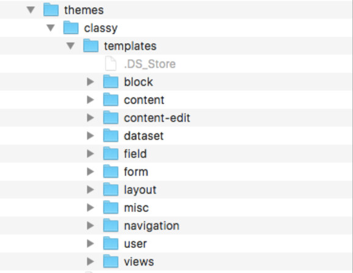
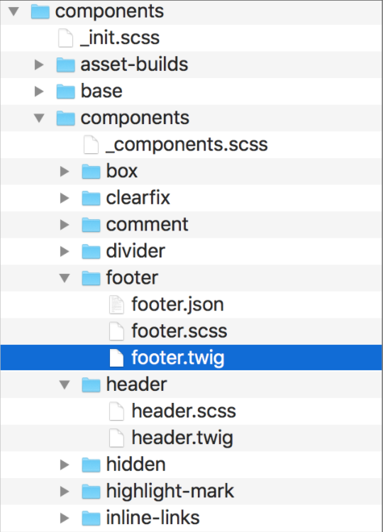
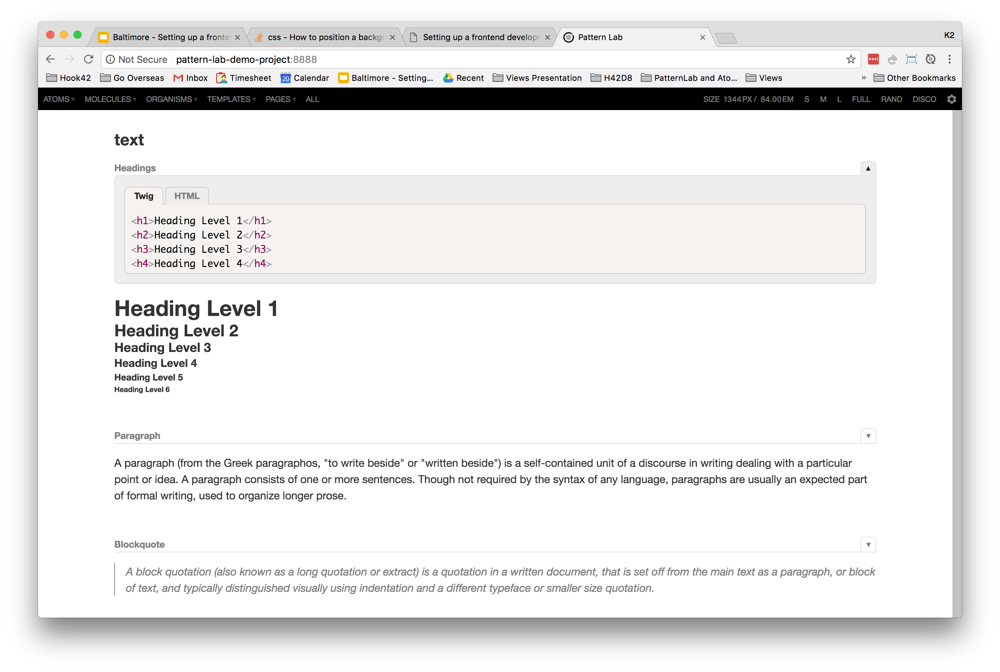

Setting up a Frontend
Development Environment for Drupal 8
Kristin Bradham - kbradham@hook42.com
Slides available at:
https://kristin-dev.github.io/frontend-dev-environment/index.html
Hook 42
- SEO, Multilingual, Migrations
- Complex Enterprise Drupal projects
- We like Douglas Adams
About Me - K2
- Site Builder / Front End Developer
- Been doing web stuff forever (not telling anymore how long)
- Drupal for (almost) 5 years
- 3 kids and 2 dogs
Why this subject?
“The frontend has more command line tools now than the backend does.”
- Joseph Flatt
We need a Checklist!
- General Environment Setup
- Drupal 8 Setup
- Frontend Dev Ops
- Theme Structures
General Environment Setup
Checklist
- Editor
- Hosting
- MAMP / WAMP
- Install Drupal
- Dev Modules
- Permissions
- Bash shell
- Git
Editors / IDE
- PhpStorm
- Sublime Text 2
- Coda (OSX - easy)
- Codekit (OSX - easy)
- NetBeans (for php)
- Eclipse PDT (for php)
- A billion others
Setup the Editor
- Drupal Coding Standards
- Format: SCSS, CSS, .twig and .yml files
TIP! .yml files require 2 (or multiple of 2) spaces to work!!!! Not a tab! Make sure your editor is set for this.
Hosting
Things to Gather
Find Your SSH
ls -al ~/.sshGenerate SSH Keys
Hosting Specific Tools
Pantheon
Kalabox (Don’t need MAMP / WAMP)
Acquia Dev Desktop (Don’t need MAMP / WAMP)
MAMP / WAMP
Change php.ini for Drupal 8 (especially for Twig debugging)
memory_limit = 1024MModules You Might Also Want for Development
- devel
- devel kint
- stage_file_proxy
- styleguide
- admin_toolbar
- etc…
Permissions
File permissions (chmod)
$ chmod -R u+w [site-path]/sites
$ chmod -Rf 775 [site-path]/sites/default
Pro Tip: Make changing these file permissions a bash alias!!
$ alias cdp='chmod -R u+w [site-path]/sites'Drupal Admin permissions
(admin/people/permissions and /user)
Make sure you have admin access
and you are NOT user 1
.bashrc
Aliases are your friend!
alias cdhtdocs='cd /Applications/MAMP/htdocs;'
alias hdd='drush @pantheon.hook42d8.peer-review sql-dump > ~/Downloads/h42d8--peer-review.sql;'
alias gitperms='cd /Applications/MAMP/htdocs/client/sites/all/modules; git config core.fileMode false; chmod -R 775 custom;'
#Search Git
searchGit() {
git branch -a | grep $1
}
alias sgit=searchGit;
Git
- Install globally
- Create github account (if you like)
- Smartgit or other GUI?
- .gitignore file
Drupal 8 Setup
Checklist
- settings.php
- local.services.yml & debugging twig
- yml files
- drush
- drupal console
settings.php
- settings.php
- Generated when you setup Drupal
- Everyone shares
- settings.local.php
- Turn “on” in settings.php, then you can put custom settings here
- Local database information
- Disable css and js on your local
Debugging Twig
- services.yml - make a local.services.yml
- TIP: find/grep
twig.debug; debug: true
In your twig files
{{ dump(_context|keys) }}
{{ kint(title) }}
.yml Files
- theme.info.yml
- Regions
- theme.breakpoints.yml
- There is no GUI for this
- Let’s Drupal know what breakpoints you’re using (doesn’t set breakpoints in scss)
- Right now most commonly used for images / picture
.yml Files
theme.libraries.yml
The new “way”
JQuery not automatically loaded anymore
load in theme.libraries.yml
Example .yml file
global:
css:
theme:
css/style.css: {}
js:
js_min/script.js: {}
dependencies:
- core/jquery
- core/jquery.once
- core/drupal
Drush
- Drush:
- Set up with Composer
- Can be installed locally or globally
- Using multiple versions of Drush
Drupal Console
- Drupal Console:
- Lots of great features - like create a theme:
$ drupal generate:theme [options]
$ gt
Frontend Dev Ops
Checklist
- NodeJS
- npm
- Gulp
- Version Control
- SASS
- SASS Tools
Why a Task Runner?
- SASS requires compiling and "watching"
- JS community likes “Linting, Concat, Uglify”
- Live Reload
- KSS styleguide
- Regression Testing
- Etc. Etc. and so forth
What is NodeJS?
This is a huge framework - not just frontend, whole applications are written in NodeJS.
For us, we just need to install it so we can install node packages with npm.
npm
Node Package Manager
A large repository of online NodeJS projects. We will use these to automate our frontend processes.
Installed as part of NodeJS.
npm and Gulp
- Gulp is a task runner. It helps us automate tasks like watching SASS, linting files and concatenating files.
- We can add to our Gulp abilities by installing npm Gulp packages.
- You can also use npm as your task runner (this is becoming more common).
- The advantage of Gulp is that it’s easy to read / configure.
Install Gulp
npm install --save-dev gulpThis will add Gulp to your package.json.
Then simply run:
npm installAll gulp / npm packages work this way!
$ npm install gulp-sass --save-dev
$ npm installVersion Control
You need this so that different developers are using the same versions of npm and gulp tasks PER PROJECT.
So the same machine might have 2 different versions of NodeJS or plugins - and it uses the right one at the right time.
Some types of version control
- Shrinkwrap
- Bower
- You can check in everything to git…
What Gulp Can Do
- SASS
- Lint JS - (eslint)
- Concat
- Uglify
- Live Reload
- Drush
- Repetitive tasks
- Browsersync
- Libraries?
Example Gulp File
'use strict';
var gulp = require('gulp');
var sass = require('gulp-sass');
gulp.task('sass', function () {
return gulp.src('./sass/**/*.scss')
.pipe(gulp.dest('./css'));
});
gulp.task('watch', function () {
gulp.watch('./sass/**/*.scss', ['sass']);
});
Grunt
(the old way)
Similar to Gulp
You might inherit this!
Example of grunt file
module.exports = function(grunt) {
grunt.initConfig({
jshint: {
files: ['Gruntfile.js', 'src/**/*.js', 'test/**/*.js'],
options: {
globals: {
jQuery: true
}
}
},
watch: {
files: ['<%= jshint.files %>'],
tasks: ['jshint']
}
});
grunt.loadNpmTasks('grunt-contrib-jshint');
grunt.loadNpmTasks('grunt-contrib-watch');
grunt.registerTask('default', ['jshint']);
};
Ruby and SASS
(another old way)
Install Ruby
RVM
SASS and Less
CSS Preprocessors
Cleaner code with reusable pieces and variables
Saves you time
Easier to maintain code with snippets and libraries
Calculations and logic
More organized and easy to setup
SASS or Less?
SASS
(Unless Less is your thing...)
SASS Tools
- Compass
- Bourbon
- Susy
- Breakpoint
- Modular Scale
- Typi
- More and more...
Theme Structure
Checklist
- Twig Files
- Component File Structure
- SASS Structures
- SMACSS
- BEM
- OOCSS
- Pattern Lab and Atomic Design
- JS and decoupled Drupal
- REST API
Twig File Structure
Classy setup is nicely organized
Classy File Structure
Component File Structure
- But sometimes twig files are in components (See Zen for D8)
- This is where things are moving...
- Instead of organizing by file type, organize by component
- CSS, JS, image and twig files are together
Zen File Structure
SASS Structures
SASS is getting bigger and we’re trying to get organized!
Types of SASS Structures
- SMACCS
Organize folders / directories (Generally) - BEM
How to name your classes (Generally) (block__element--modifier) - OOCSS
Separate structure from skin (layout from colors / fonts)
Reusable classes
SMACSS Example
/* Example Module */
.example { }
/* Callout Module */
.callout { }
/* Callout Module with State */
.callout.is-collapsed { }
/* Form field module */
.field { }
/* Inline layout */
.l-inline { }
BEM Example
.nav {}
.nav__list {}
.nav__list__item {}
.nav__link {}
.nav__link--active {}OOCSS Example
.button {
width: 200px;
height: 50px;
}
.box {
width: 400px;
overflow: hidden;
}
.widget {
width: 500px;
min-height: 200px;
overflow: auto;
}
.skin {
border: solid 1px #ccc;
background: green; }Pattern Lab and Atomic Design
Pattern Lab is a an ‘application’ that creates a very nifty style guide
It is based on Atomic Design principles
Atomic Design Principles

Pattern Lab Example
JS and decoupled Drupal
These live outside of a theme - they have their own file structures.
- ReactJS
- AngularJS
- EmberJS
- VueJS
- More and more and more...
“ It really doesn’t matter which structure, just tell me in the readme.md and stick with it (so I can find things).”
- Me (K2), Pragmatic frontend developer
Other things to make life easier
- Slack - drupaltwig
- X-Code for iphone simulator
- Browser plugins (livereload )
- Photoshop / Illustrator
- Ticketing systems
- Jira
- Zoho
- Bookmarks
Join Us for Contribution Sprints
#drupalsprints - Friday, April 28, 2017
- First-Time Sprinter Workshop
- 9:00am-12:00pm
- Room: 307-308
- Mentored Core Sprint
- 9:00am-12:00pm
- Room: 301-303
- General Sprints
- 9:00am-6:00pm
- Room: 309-310
THANK YOU!
WHAT DID YOU THINK?
Locate this session at the
DrupalCon Baltimore website:
/setting-front-end-development-environment-drupal-8
Take the survey!
https://www.surveymonkey.com/r/drupalconbaltimore